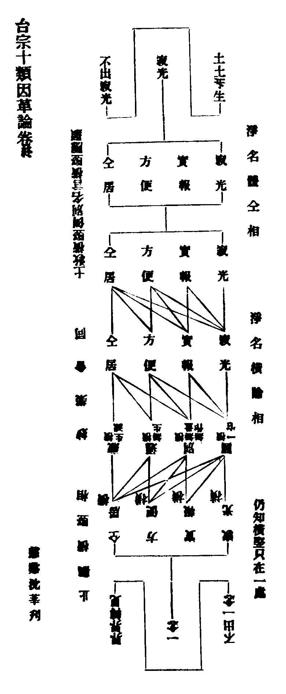

卍新纂大日本續藏經 第57冊
No.964 台宗十類因革論 (4卷)
【宋 善月述】
第 4 卷
台宗十類因革論卷第四
壽量論第九
總篇上
論曰。佛身無為。不墮諸數。則佛固不可以數量求也。云云自彼。於我何為。而尚得以名相論乎夫。是則佛本無身。無壽無量而可說示也。矧以凡地情量分別。諸佛境界不可思議。其不可論而得辨而知也亦明矣。雖然。此特佛本住法第一義諦。不可說一途爾。若乃全體起用。普應群機。隨順世間。於無身壽。現有身壽。施於應迹。寄諸名言。亦何往而不可哉。故一家壽量之說。該於三身。三身應於四教。四教機別。所見不同。體同用殊。身說亦異。故三身有事理修性體用開合法相之別。而壽量亦有通別進否名義之殊。播諸章疏。則六能四句。文各異釋。歷乎時教。則五時教主。相復殊品。至於應相勝劣。身土感應。言迹既彰。則辨論形焉。辨論生於異見。故宗途之說不齊。雖不能齊。而是是非非。要有定論。然則一宗說而歸至當者。必藉夫論辨。今試略以諸例論之。
別例中
右壽量類文。總八十有七。言四佛身相機見體用同異者十六。言三身壽量身說不同者二十。言諸身開合者九。言六能四句釋量無量者十五。言應相勝劣者十。言五時教主兼淨土應相者十一。言身土感應者六。凡七例。
四佛身相機見體用同異例(一。三。五。六。七。八。九。十三。十四。三十五。三十六。三十八。三十九。四十一。四十二。五十一)
論曰。自佛言之。由三身而應四教。自機言之。由四佛而見三身。蓋三身乃如來圓證。是為三德。不縱不橫。未起化前。合為法身是也。義須先明。今從文始。且以四佛。而為首論。夫佛本於無身。故不可以身定。原於無相。故不可以相見。尚無一法可取。豈得以四佛而言乎。特由機教相扣。感應斯彰一期化迹。故四教應相。於是所以形焉。如文明四佛成道。自覺覺它。以至轉法輪。入涅槃相。即八相之三。或圓見一一皆八相者。佛果之事備矣。而文出四佛壽命。常無常異。及四教相好之別。其所以異相亦明矣。然則所見者應也。能見者機也。故復出四教。機見不同。大略文相。不過如此。今姑約六義四難以論之。何謂六義。曰機應。曰揀判。曰境本。曰本迹。曰當分跨節。曰體用。所以機應者。然應本無殊。機見自異。機雖見異。應相常同。故以應從機。應相亦別。以機從應。機見亦融。故曰祇是一身。四見不同。此則機應之論也。夫既約機。四相有異。教門揀判。義乃多途。謂小衍則相無相殊。約偏圓則曲直之異。如文云云。准此以明。則四教迭論。次第勝劣。真中事理。見相差殊。此則揀判之論也。又以境本言之。則四教之身。雖皆三密。約身從土。本自同居。則曰以三藏如來。而為境本。於色相上。四見不同。境本雖爾。本迹不然。故約應邊。從實而論。則本圓迹偏。如曰前三權果。本是圓佛。垂為三迹。此則境本。本迹之辨也。然則此皆當分之身。故有四佛四見之別。若約法華開顯跨節而言。則三藏劣應。尚是圓佛。況通別乎。故曰若開方便。示真實相。即向身是圓常之身。雖然文示當分。無非圓實。猶是會偏歸圓之意。若約實意。而論體用。則不唯體同一佛。而亦用均四殊。亦猶約法。既開三教。無非秘妙。是則三佛。亦皆妙權。故曰若得實意。方知四佛體同用殊。此則六義之論也。何謂四難。曰四佛成道。曰通教合身。曰亦通佛収。曰入見尊特。所以初難者。此由昔人嘗有難曰。大小二始佛。固各有成道之處。敢問通佛。何處成道。(云云)彼因答曰。祇一佛成道。四見不同。何必一一約處難邪。彼作是答。自謂獨拔之見。殊不知其難猶在。今應更問。通機復於何地見成佛邪。故知義猶未盡。以今言之成道機見之說。固不可易。要知通機。初見成道。雖非二始顯教之數。不妨此機。於鹿苑時。有密見者。作此答之。庶亦可矣。其次難者。出於通佛。有所謂帶比丘像。現尊特身。又曰。丈六尊特合身佛。雙住真中。故有合身之義。因有兩宗論。以須現不須現者。今謂此義頗涉宗旨。至下論宗。始可究本。今置其諸。姑約合義。折中其說。則現不現。自當知爾。彼云合者。蓋言一身雙現兩相。非謂即劣是勝名之為合。今則不然。祇一佛身。二見不同。義之如合共義。帶義亦然。何必須現然後為合哉。若如彼說。是殆以兒戲。論佛身相。惟識者斷焉。又其次難者。蓋霅川。嘗以輔行及觀經等。亦通佛収。以難四明淨土教主非尊特者。四明以謂指四十八願經焉。今謂。四明凡所議論。率皆正當。白玉微瑕。唯在指經一事。不然則的指何經耶。此唯憲章。頗得指文之實。委如彼文。自昔共取。今從之也。至於入見尊特。所以難者。本二乘於方等被彈斥故。轉藏成通。既入衍門。得見尊特。有異一家真中義者。今謂見有分見。有非分見。此蓋非分見者也。以彈斥故。須加被見。以非分故。出仍見劣。故不應以真中分見者。為妨二識進退。委如後辨。於此亦應論真中感應等相。義在後例。此得置之。
三身壽量身說不同例(四。二十。廿一。二十二。廿五。廿六。三十。三十一。三十二。三十四。六十。五十八。六十九。六十一。六十二。六十七。七十。七十一。七十三。八十三)
論曰。夫三身者。壽量之本也。故量非身。無以極其致。身非量。無以盡其相。然欲明壽量。則必約三身。以示大體。但三身之義。大有所關。壽量之言。名有通別故。於是有體性焉。有法相焉。有所住理焉。有壽量文焉。有身相焉。有說默焉。有宗途論焉。是不可不明之也。何謂體性。即文有曰。二者從體。三身相即。無暫離時。又曰。若其相即。俱說俱不說。此皆約體性以言之。故三身舉一即三。全三是一。不縱不橫。不並不別也。何謂法相。不出事理修性體用等別。即法身理也。性也。報應事也。修也。又法報為理。應用屬事。智合於法。名為體。勝劣兩應。名為用。體則為真。用則為應。故合唯二身三身。既其體一。法相亦不分而分。一往雖然。通論非例。(云云)又報有自報。有它報。名雖通它。實唯局自。故文釋三身。報但約智。良有以也。但智德勝應。莫非實因所克。故通得名報應。由從機所現故。復名它耳。所以修性不妨體用。體用不妨修性。但觀報智。合於何身。以分二義。非謂合自它為一報身。離報身而為體用也。若以它報。定屬報身。則應用唯劣。徧應義不成。若應兼勝劣。則它報徒張。其妨匪一。又自昔謂。報有上冥下契。故兼自它者不然。是亦祇約自報之智。以論冥契。故曰報身智慧上冥下契。若也它報下契則局。何由通應勝劣乎。其非略爾。但深窮它報根乎理智。故未始敻殊也。何謂為所住理。即文有曰。丈六身佛。住真諦等。是亦一往。從教有四。實唯三身。住三諦理。又以真中感應言之。則所住唯二。蓋以教從理。亦從於應。唯二應故也。何謂為壽量。文如妙疏等。或直釋壽量。而義通三身者。或約三身。以明身壽量三不同者。或引三日喻。以喻見佛壽有長短者。或釋非滅唱滅。通約三身。以明義者。或約修德三身。與法性冥一。故各有非常非無常義者。或別從報身釋品。通攝三身者。或直言壽量。意欲圓論三佛者。今謂文雖異釋。其明三身壽量一也。但義有詳略。喻有長短。言偏義圓。修性相對。名義通別。或通總等。故文相不同。以義帖釋。略可知也。(云云)然於名相。不無進否。大體無別。亦會之可知。而所當論者。唯三日喻文。霅川以謂別圓。地住以前。猶見劣應。故以此文。為的據也。文曰。於諸菩薩。未登地住。所見同前。記云。同前二乘。豈非於見同劣應乎。今謂經以三日喻三身。則冬日一喻。正喻應身。約人雖局。約喻實寬。以勝劣兩應。莫非冬日所喻。故同前者。同二乘所喻之冬日不同。二乘所見之劣應。是則地住以前。乃見勝應耳。若猶未悉。更試以文中兩猶是勝應句。進退與奪論之。彼之初句。即方便土。二乘雖見勝應。猶是冬日。例知未登地住菩薩所見勝應明矣。彼之後句。即已破無明者。奪而論之。亦猶是勝應。雖謂冬日可也。但地住以上所見。正喻春日。故止以報應二名。而論與奪。不以冬日論與奪也。此姑通文。後當更論。何謂身相。即如光明文句。凡兩出之。前雖明身。其相猶略。蓋對壽量。而說身故。今獨明身。故專以相好言之。則三身各有相好。文雖互見。義必兩兼。今但舉身。則可以知壽量。然相好之言。本雖報應。今於法身亦云者。此則無身之身。非相之相。以諸法門莊嚴法身。義云相好。故曰無形第一體。非莊嚴莊嚴。即法身相好之謂也。何謂說默。此由記主。斥近代譯者。法報不分。二三莫辨故。委明三身說默。以闢其非。意言若以遮那。為即舍那。舍那有說。則法身亦有說。法身說者。則眾生亦然。是則進退皆非。故曰若存三身等。(云云)言存三身。則相對之義。亦從事義。惟相對則有相即。從事則有從理。若事理相對。亦應有事理相即。今從略說。故對祇是即。所以從開有六。約合但四。委明其相。(云云)然則一家大體。必具即對等義。文雖出此。義必該通。凡諸名相。皆得約之。以示通說。何謂宗途論。即四明霅川。所議三身。無不皆異。故論法身。則相無相別。報身則現不現殊。應身則即不即異。宜其齟齬不相入也。且夫法身相無相別者。一往定宗。謂法身有相者。四明也。謂無相者。霅川也。然則法身未始異。而兩宗之說殊。蓋霅川以法身為理。故唯如如冥寂之體。則無形質差別之相。設論其法。但具其性。亦言即理。還即無相。纔言即事。而有相者。便屬三土應用之事。故寂光法身。定無相也。如是而已。四明則不然。雖亦以理為法身。而言非無相者。蓋理性之相。即非相之相。故曰但無隨情有相之三。非無性具微妙身等。然論即具。未始相離。故說性具之相。不離依正色心。雖即諸法。而非諸法。所謂即一切法。離一切相。以非諸法故。則無隨情有相之三。以不離諸法顯非相之相故。則曰非無性具微妙身等。是則終日常即。終日常離。即離俱時。性具旨顯。方曰妙達即具者也。以此格彼。得失可知。雖然是猶分宗之說。若夫大體論之。則又有克體義焉。即事義焉。相對義焉。克體則有寂有照。即事則有即有離。對義則有對有各。莫不一有相。而一無相。膠於一端。未免偏見。一以貫之。始曰大方。然所以偏言者。是非四明之言。蓋佛祖之言也。良以真寂性中。本不可示。亦不可見。苟不可示而見者。則如來教何所施。機緣理何所入。故於非身非土。而說身土。宜乎。今示非相之相。雖然偏言則可。偏計則不可。如霅川者。則偏計矣。彼又焉知大體哉。而乃專以事中差別為難。或直以依正色心等為相。是皆厚誣四明。非所謂善宗旨也。要當於一切法。識得此理。始可與言法身之相。所謂報身現不現殊。應身即不即異。此二相由故。合而論之。然以應身即故。報身有不待現者。四明之說也。應身不即故。報身須現者。霅川之義也。蓋各為說不同。彼約身相大小。而為勝劣。故尊特有全現分現。生身有但可即法不即尊特之說。(云云)四明則異是。不以身相論之。克就真中感應而辨。故有三雙六隻之義。示現現起之相。其建義若此。何者為主當邪。今試得以評之。夫報應者。法身之大用也。然以法身為體。則寂然不動。故無現不現。無即不即。唯一大圓鏡體。而隨緣赴感。未始有窮。惟其稱此體故。起而為用。亦無現無不現。無即無不即。但對機設化故。或勝或劣。或大或小。千變萬化。不可紀極。然則尚不當即。況言不即乎。尚不當不現。況言必現乎。但四明即體示用。且以即而不現言之。霅川捨體論用。故言不即而必須現也。夫捨體而論用。其用未必然。即體而示用。是用與體兼得之也。彼徒見身相之迹。文義之末。區區求合而已。殊不知佛身之本。機教之正。有不在是者。餘如後論。(云云)由是評之。兩家得失。較然可知。此所謂宗途論也。至於壽量名有通別者。然身壽固各有實。量名何所召乎。蓋不出通別之義。通則莫非詮量身壽。故身量有大小。壽量有長短是已。別則壽之量故。故言壽量。是則量名為通。身壽為別。苟為通別。則二實而已。二實而三名何也。曰實雖唯二。三義何妨。蓋非量。無以詮量身壽。故身壽必由量而定。是則身壽者。實之名也。量者義之名也。所以二實。不妨三義。亦猶十如。本末之一。其實則前九如而已。要必由此一如。而後得前九如之實。所以諸文。皆言十如者。亦其義也。
諸身開合例(二。十一。十二。十九。二十九。四十三。四十四。七十二。八十四)
論曰。佛固不可以身數開合論也。而經教法相。言有廣略故。廣則十身。略唯二身。處中而言。則三身或四身。雖有廣略。體無增減。但開合之異。故於是論開合焉。略論為二。謂各論開合。迭論開合。各論復四。初。二身開合者。如釋論明生法二身。而一家約之。大小兩乘。各有生法二身生相。又以教言。四教不出勝劣兩應。於兩應上。各有生法二身。離之則四。若相望合說。還同二身也。二。三身開合者。如觀經疏。有色相身法門身實相身。金光明則合彼理智。為法性身。開彼應身。為生身。為尊特。雖互開合。三身不虧是也。三。四身開合者。如止觀明。法報應化。四身為本。一一能起四身。又四身各入一身。兼本共成三十六身。俱法界故。能起能入。故合則四身。開則三十六身。四。十身開合者。如華嚴十身舍那。謂於眾生身作己身。具餘九身。乃至虗空身作頭亦然。故合則十身。開則百身。若次第迭論。乃開一為二。開二為三。開三為四。開四為十。反而言之亦可十歸於四。四歸於三。三歸於二。二歸於一。次第互攝也。所以論者。二義一論。十身通別。彼難四明云。若不現大。便為尊特。則別圓之人。見猿猴鹿馬。無非它受用報邪。而四明解之。有順有違。如曰。若中道感應。名尊特者。名多在佛等。則違問答也。又曰。雖不立名。非無其義。乃用華嚴十身為說。則順問答也。然此違順二答。即妙樂所謂通別二義。如曰彼通云身。故云十身舍那。別釋如來。故不應云業報佛等。以彼會此。文旨宛同。安得隱其違問之文。而專以別義為難。以此考之。霅川虗妄。一皆如此。檢文可知也。二論四身起入者。即法報應化。互起互入。勝劣相即。皆不思議。得有三十六身之旨。而輔行釋此有曰。從勝起劣。即是施權。從劣起勝。即是開權等。又曰。理無起入。約化緣明。豈可從緣而亡於理。據此一文。可以格霅川之非者三。一彼以生身。但可即法。不即尊特。而此則四身。互論起即。二彼以法華教主。唯是生身。而此則曰。從劣起勝。即是開權。三彼以用約從緣。故勝劣不等。而此則曰。豈可從緣而亡其理。其於此等文旨。合乎不合。當自知之。如向四明即體示用。則合之矣。
六能四句釋量無量例(十八。二十三。二十四。四十六。四十七。四十八。四十九。五十一。五十七。五十九。六十三。六十四。六十五。六十六。七十七)
論曰。文釋壽量一也。而或約三身六能釋。或作四句釋。蓋各隨所釋。文旨不同。義勢各別。或者乃疑。此以此釋。而彼以彼釋。必求其元致者。且以亦得互釋為問者。是皆舊傳迃闊之論。縱無來自。其可彼此一律乎。凡此等不急之論。雖略之可也。況不無所以。且三身六能之釋。是固一家建義當然。蓋先通示三身。而後依體起用。以明六能。則修性體用。兼而有之。抑有會於題品之義故也。若妙疏四句。則評古而作。繼以文會義便之釋。亦豈少三身哉。況復四句。義當三身開合之異。且曰。法報合故。能應物者。此即六能。義備文略而已。一往雖異。大體無別。而或者乃謂。修性體用之義。且甄部別者。如向會通。何異之有。異苟不存。部別何在。以今言之。談常過未。本迹通局。自足揀別。安在其釋義異邪。斯皆鑿說。不足道也。然於六能。則又先達判能。上下指身。勝劣有異。(云云)今詳定其說。當以四明為正。何者。盖六能者大用也。大用起於寂體。是必該乎四土。乃極其所謂體用。則宜曰常身無量。通應三土。無常有量。但應同居。而用必對體。其說圓顯矣。不如是則。既非寂體。無以垂三土之用。非大用。無以顯常寂之體。又何足為圓極體用乎。大體既正。則有量二義。任當如四明之說。復何疑焉。苟如彼釋。則是以寂光理智之體。而獨垂同居淨機之用。方□實報體用何歸。但此考之。一何疎矣。指身之說。固各有據。其如名義。要必精簡。然彼以其說。則曰依句之次第。而此亦以其說。曰唯義之是。從是皆未足議其取舍。今以二言。折中之曰。非身之身。其身勝。所非之身。其身劣。雖皆非身。所以則異。但以此義。勘彼二說。是否判然。當不言而定也。如四明所指。可謂依義不依語者矣。其於四句指身之說。雖或異同。皆可見之。義無足言者。唯觀經所謂八萬四千相者。若以為尊特。合屬第二句。但題稱無量。約此義便。故屬第三。況疏文明判。為真法身。然亦不失法身句義。是則初後二句。劣應生身也。次句報身也。第三句法身也。所以四句三身義足。而言量無量者。兼彼諸文。則又有雙非。或四句之異。今總論之。其於量無量。又有多義之別。謂約勝劣兩應以說。或生法二身分之。或四句名實對辨。或四喻法譬況釋。或俱無量。而有生法之異。或祇約有量二義。相望而言。雖此不同。要不過量無量耳。但無量之言。或兼法報。有量之義。復通長短。故使諸文說之異爾。雖復兼通。捨通從別。正以生身為有量。尊特為無量。此其常論也。餘之同異。會攝可知。如釋論生法。全同二應。即指尊特為法身故。四句之中。初後二句。生身有量也。亦有量之二義。第二句尊特無量也。以兼第三法身無量。故成四句。亦由名實對辨故也。山斤海滴。譬兼能所。故況有量有無量也。所以光明疏。以此同彌陀之壽。能況有量也。妙樂以此證光明之一義。所況無量也。或生身無量。此則彌陀。生身有量。此則釋迦。若約法。則二佛皆無量也。有量之無量。義通二向。或謂。無量順題言也。或謂。有量克實論也。約義雖通。望彼無量。還歸有量。若加雙非。則進取法身。及自報智。義當非量非無量故。量無量者。二應也。又以有量等四句言之。則退取有量一句屬凡。故以應身。義當雙亦。餘不異上。是則法身。該乎二義。非量非無量者。理性法身。雙非報應。不偏屬故。亦無量者。乃以法身體常。強名無量。亦是非量非無量。而偏言無量耳。義雖進否。實不相違。應亦二義。准說可知。(料揀如別記)要知諸文。各當其義。不事煩委也。
應相勝劣例(二十七。二十八。三十七。四十。五十三。五十四。五十五。六十八。八十。八十一。八十二)
論曰。壽量雖廣。三身而已矣。應相雖殊。勝劣而已矣。(勝應。亦名報身。亦名尊特。劣應。亦名生身。亦名丈六)然言三身。則法報常同。示應相。則勝劣或異。故宗途於是論焉。如霅川。專以身相為說。故以華嚴藏塵相好。為尊特。以三十二相及八萬相。為生身。則是約現不現。以論勝劣也。不得已。而有分現全現之義。彼之建立。如是而已。四明則不然。指身言之。藏塵八萬。固唯勝應。而丈六四八。不專劣身。於是有示現現起之相。故曰不定。約相多少分之。克就真中感應而辨。(云云)所以然者。蓋如來有定應。而無定形。惟其無定形故。則不可以身相大小定其勝劣。亦不可以現不現判其優降。惟其有定應故。則必以機教論之。乃見如來所以應相未始差忒。故有所謂真中感應之辨。要其說不出有三。謂真中二理。即如來所住。能應之本也。事業二識。即機緣所依。能感之資也。雖有是二。苟不於中。修以二觀。則生佛懸隔。何由感應道交乎。是則空中二觀。又為交感之道也。故三者一不可減。減則機教之義缺。亦不可增。增則感應之道贅。以是知。四明三雙六隻義門之功也。夫如來之應有常。而機或在亡者。蓋佛所住理。未始暫虧。性識與觀。或俱不俱。故有是識。而無是觀。不見也。如凡夫。雖是事識。而不見生身。二乘雖當業識。而不見尊特是也。有是教。而非是識。不見也。如別十信。圓名字人。雖稟別圓。而見思尚熾。事識彌隆。故亦未見也。惟三者備。而後能見者。分當見也。三者不備。而或亦見者。非分見者也。如向二類。則佛以力加。乃加於可加。令其得見。亦非見而見。不在此類。則凡夫人。或示劣身。或以勝身。強之令見。至於所見。有示現現起。能見。有位次進否者。亦由來共議。是不得不論也。昔論二現者。或以藏塵八萬。為現起。三十二相。為示現。或亦通現起。(云云)今謂此義亦難定論。若約如來。自其境本言之。通謂示現可也。自其高大言之。通謂現起可也。夫豈有意於示現現起哉。然則二現所以異者。亦約乎機教。定之而已。如華嚴藏塵。帶別教道。因於緣修。唯大機所見。不通於小者。謂之現起可也。又如方等。雖小機在座。為彰彈斥故。令皆見大者。亦現起也。又如通教合身。於被接者。雖睹尊特。然猶與小機同見。謂之示現可也。至於法華。唯圓機所覩。且為彰開顯絕待義。故即劣辨勝者。亦示現也。由是言之。相雖有四。不出二義。則二約機論。二從教辨。此其大體而已。若乃應持不見其頂。目連不窮其聲。則又彰如來不思議應。故令二聖始見丈六身聲及量之彌高。窮之益遠。始知高大有不可及者。使驟見之。則不復窮矣。以是知其亦示現耳。然則止觀等文。以之示別佛現起相者。蓋齊其末而言也。若揣其本則異矣。彼或以此。而為分現。盖不知輔行有身聲既爾諸相例然之文也。如光明所讚。三十二相。四明以為示現者。亦約其方等。機教不一。祇一佛身。而所見高大者。謂之示現宜也。於非分見者。即加之令見。然則方等別機見示現。而華嚴不然。被接之機見示現。而別當教者。不然何也。曰非然也。若直約機論。大則見勝。小則見劣。又安知所謂示現現起哉。但約機教合論故。華嚴機教純大。謂之現起。方等通於大小。謂之示現。抑被接者。始睹劣應。後以機發受接。還於劣身。而見尊特。庶幾乎知示現矣。故與當教者異。然終不可以此論其優劣。又如八萬相。謂之現起者。此本淨土應相。雖自一途。亦豈外於機教哉。後當更論。所謂能見有進退者。彼約別圓真似而論。此以真中始終而見。雖有兩說。要之大體。當以後說為正。何者。若使別圓似位。猶見劣應。則別佛不應單現尊特。圓佛不應隱前三相。往往彼必謂之加被也。然別猶可爾。祇如五品。已能圓修三觀。則觀行見。十信似證。即相似見。而必須加被。何抑之甚乎。推此而言。別亦應見。但有淺深耳。不然。四明以三根按位接入者難之。當何所逃。抑彼之說。乃以破無明。方是業識故也。殊不知二識之論。本以教所詮。惑所熏者言之。所以別圓。無問真似。皆屬業識。以莫非無明所熏起故。況今不獨以業識論見。必於業識。而修中觀。始能見耳。若地住破無明。正是分破業識。以中觀見。豈止業識而已。由是明之。則勝劣二應。歸於真中明矣。故妙樂曰。藏通二身。是劣應耳。別圓二身。是勝應也。四明則曰。生身本被藏通之機。尊特身應別圓之眾。即其義焉。然則妙疏。以二應為應。利鈍兩根。各有生法者。而淨名疏。則曰。勝應為菩薩。說大所現。劣應為聲聞。說小所示。且曰。尋應有得法身不得之義。則並似約大小而說。若與向義異者。今謂文各有旨。而終歸一致。妙疏之文。正明生法二身。約大小始說故。且以三藏。對別圓言之。舉藏可以兼通。若淨名文者。一往彼約部旨言也。其實通佛。乃在兩楹之間。既有尋應得法之言。還歸真中而已。又如淨名云。亦可劣身而說勝法者。此約障邊故。義與上異。然亦應有勝身。說劣法者。此復一途。姑置之耳。又輔行示通佛神變。而以勝應言者。葢約增勝而說。故藏以劣應言。通以勝應言。別以報言。圓以法言是也。如曰各見世尊在其前。是固通教合身之相。其如淨名。所謂如須彌山等。豈直通佛。故知一往云爾。至於光明。約弟子一多。以見四佛同異者。亦機應相顯之義故。以機顯應。則見四佛身有同異。以應顯機。還知弟子有常身應化之別。而曰眾有一多者。亦約四教機有三乘純雜而已。
教主應相例(十。十五。二十七。三十三。五十。五十二。七十八。七十九。八十五。八十六)
論曰。苟得向勝劣義。則五時教主。與夫淨土應相。當不言而定。今所論者。姑略言其大致。然則教主之義一也。而所以論之者四。謂或以身土大體。或以部教權實。或以機教感應。或以方土彼此。蓋各隨其時宜。與所當論者。如何非直定其身相而已。知此始可與議兩宗是否焉。何者。如華嚴應相。既現華藏塵相之身。其相則顯。不待言其為舍那。而所當論者。五時之始。必先正其身土大體。故四明以華嚴。是千百億應身所說。又曰。須是分段生滅之身。然則藏塵相好之佛。而特指為分段生身者。盖以其相。雖是尊崇特勝之形。然以其土。則同居分段。有色有心。以其身。則示同人法。有生有滅。又以始終大體求之。則始有初或之文。知其為補處應佛也。又有脫著之義。知其祇是一佛。而示有勝劣也。終有入滅之事。驗其至於雙林。還歸無常也。故知相起之本。元自生身。謂指其體一也。若夫辨相。是亦舍那為教主爾。故曰此身既被別圓之機。見是尊特。豈非以相則舍那乎。今因為之說曰。約應指體。(此體即身。但對相立。故以體言。非體用之體也)元是生身。從機辨相。乃為舍那。義方盡耳。或謂四明之說。專在生身者亦誤矣。而霅川以謂勝應尊特。此身本是界外法性之色。非同居應相現起者。惡有是理。彼據其相。未必得其體。今指其體。抑得其相焉。然則四明。以華嚴應相。為生身者。約身土大體論也。又如法華教主。以其身雖是三十二相。然以部旨言之。謂是開顯絕待妙身可也。夫既開顯矣。則能說教主。即圓佛相也。夫既絕待矣。則還指昔身。不別有也。故曰法華已前。三佛離明。隔偏小故。來至今經。從劣辨勝。即三而一等。良以今明法華。須混一代。以論開顯。身有以驗乎說。說有以驗乎身。至於能說之人。獨不然乎。故亦必窮其始末。而為之說。何者。且以在昔勝劣言之。則華嚴藏塵。瓔珞勝應。尊特也。鹿苑丈六垢衣。劣應生身也。雖有四教當分之身。亦無出此二途而已。然今法華。於彼二身。為何身邪。曰俱非並是。何也。是必約開判。論之可也。謂以論判。則藏塵尚非丈六。安得是乎。論開則垢衣。尚是瓔珞。那得非乎。但華嚴雖是瓔珞。而猶隔彼垢衣。鹿苑但是垢衣。而不即彼瓔珞。然則開垢衣。而即瓔珞者。其為法華教主乎。故曰開垢衣內身。實是瓔珞長者。記釋云云。又曰。今開方便門。示真實相。即向身是圓常之身等。又如向所示二文。皆其旨也。所以淨名疏。示四度現尊特。唯法華最勝者。以餘經皆非開顯絕待之身故也。又曰。若說法華。但現尊勝是也。所以四明。以今經教主。為尊特者。約部教權實論也。而霅川於此。專以相言。謂是生身者。豈不乖於部旨乎。如易置其說亦得。以部教權實論華嚴。則彼猶帶別相。須現起故。不若法華之最勝也。若以身土大體論法華。則此亦生身。如曰住生身而顯一等是也。但今從強耳。至於方等般若。能說教主。教既不一。機亦異見。則宜以機教感應論之。故方等凡二途。若以大斥小。如淨名等。則有入見尊特出仍見劣之事。雖約小衍而論出入。不以加被。還是真中感應義。若逗大逗小。則如光明等。一佛異見。有勝有劣。或如藥師等。唯尊特身。諸方等經。是例非一。在般若。則正現尊特。以帶通機故或現劣。如曰般若亦現門內尊特之身。乃至云。以眾生疑故現常身。放常光等。是亦約機異見之相。非謂如來實爾現大現小也。鹿苑唯小。故佛亦劣身。若約密論。何容非大。姑置之耳。其如淨土應相。則又二說不同。如般舟等。唯說三十二相。觀經則說八萬四千相。及丈六八赤。雖有此異。不出二身。理而言之。本唯一佛。對機有異。大小不同。故使經教從緣異說。如彼般舟。三十二相。丈六之身。通大小機。無不咸見。故小則見劣。大則見勝。亦如此土三十二相。而眾機異見是也。若八萬相。唯大機所睹。以為圓人所緣勝境。亦如此土藏塵等相是也。故從丈六劣應言之。則是有量之無量。從八萬勝應言之。則無量之無量。二義雖異。同名彌陀。無量雖同。名□體別。不可惑其名似。遂乃混而不分。是則彼此二土。生身尊特。其相攸同。但此則身土斯劣。故以丈六生身為本。彼則依正殊勝。故以八萬相好為正。然則四明。以彼土教主。為勝應尊特者。是約方土彼此論之也。非謂彼土不兼生身。若以常身常相言之。是亦三十二相。為教主焉。隨緣異說。逐物所宜。則無在不在。若如霅川。併以八萬相為生身。則彼土但有生身。殊無尊特。別圓大機。何以應之。若必以藏塵相好。為尊特者。一家教門。淨土諸經。曾不言之。況彼於此三十二相。尚有分現之義。何不於彼八萬相上亦分現邪。但此考之。進退咸失。雖彼有十義。伸之之難。與夫前諸應相。文義之妨。斯皆末節。大體既正。餘不足言。亦當伸之於後也。然則文以法華。為報佛所說。又曰。凡四度現尊特。唯法華最勝者。是固定身相。合部旨之言也。而又以法華。為垢衣者。約所開說也。疏示誡妙音之意。對彼土不達者言也。況文曰。不可見卑小。而忘其尊嚴。正是即劣。辨勝之旨。故皆無所違。其於方等。言尊特者。或示現。或現起。示現如上光明之文。固無可疑者。現起則如藥師。巍巍堂堂之相。淨名須彌映海之身。皆其相也。既唯大覩。於藏通小機。亦加被令見而已。以其在應同一見故。不同示現。自見劣故。又如觀疏。引智論之文。十疑論緣彌陀之相。觀佛三昧經。說八萬四千相。皆言淨土教主。正符四明之說。如彼曲釋。烏得合哉。
身土感應例(十六。四十五。七十四。七十五。七十六。八十七)
論曰。三身依於四土。四土本於三身。身既即一而三。土亦全四而一。夫是則孰同孰異。何通何局。未始有定論也。但教門分別。有即有離。其於離義。對義如常。(云云)或文有進否。或義有通變。不可一揆論也。如曰常身無量。通應三土等。此則體用之義。故理智屬體。當乎寂光。勝劣二用。屬下三土。但勝應二名。亦名尊特。亦名報身。言報身者。即佗受用。然與尊特。同出異名。故下三土。通皆應之。但劣應生身。不通上二土。此常論也。又如文曰。若從妙覺。應為實報。圓滿相好。非餘界所堪者。又於方便。示勝應身。圓滿相海。如前實報者。而記料揀云云。此所謂文有進否也。然言非餘界餘土所堪者。約真奪似言之也。而亦應之者。取其勝應。似彼報身也亦謂應其機宜。實不應其土界也。故曰云如前者。稍似實報。非謂全同。又文有於方便土示勝劣二應者。又曰。方便有餘土。起勝劣兩應者。此所謂義有通變也。所以初文。則相望而言。故方便土似道之機。而有體析巧拙之異。故所見應相。有勝有劣。雖云劣應。實匪生身。故曰更不示為種種諸身也。其次文者。則又兼彼同居言之。如曰勝兼兩處。劣唯鹿園是也。又曰。方便土通佛涅槃者。既不同界內灰身之滅。是亦法性勝應而已。但方便有用。通之說故。約機息應轉。義云入滅。在文可見。然而霅川有云。華嚴勝應。本是界外法性之色。既不由生身現起。有似彼土應來者。而四明亦曰。是實報身。應同居土。若為異邪。曰不同也。所以四明云者。一往以土定身。其實還自生身現起。故有千百億應身。所說之言。義則無失也。彼既不然。則彼此乖隔故。不可同日語也。
餘論下
論曰。後五百歲。鬪諍堅固。其於一家壽量見之。始則孤山四明。二大宗師。角立於前。加之霅川法師。鼎分於後。逮至于今。異論不息。由是壽量之道。蓁莽蕪穢。日以充塞。而四明之說。卓立乎其間。久而愈明。但雪謗之。後會四明。歸寂無得。而伸後學。不能無遺恨也。故今因之。以餘論焉。或問。彼雪謗中第一。先論法華教主。即劣辨勝之義。以謂內體可即。外用不可即。以外不即故。敝服宛然。非謂開權。便須脫敝。若然則法華滅絕。老比丘相。世間相當。如何解邪。又若謂法華。但現尊特。全不現劣者。如妙樂。明示法華佛及弟子身俱是劣。豈亦減謗邪。以至備引諸文。並難四明尊特。不須現者。(云云)此等文義。若為伸之。曰但得向來諸例明義。此自可知。不待伸也。為未悉者。略言之。今謂彼作是難。有不曉者三。一不曉體用。二不曉應相。三不曉身土。且夫圓論體用。一而已矣。體用既一。用可異乎。若但體即。而用自不即者。如妙用何。抑今家有言。良由理具。方有事用。亦一而已。若一融一不融。則不得為全理為事。由事顯理也。不知霅川何見。輒以凡情。度量聖境。苟如彼說。是全未曉即體之用也。二不曉應相。原夫如來應相。本一妙體。未始差別。雖無差別。而不得不別者。由機緣感見之異也。所以宜大則大。宜小則小。宜見勝則。與之為勝。宜見劣則。與之為劣。現不現等。亦悉隨緣。而未始定一。非謂應小。而見自大見勝。而應自劣也。然則法華應相。雖曰即劣辨勝。既見勝矣。豈應尚劣乎。既即尊特矣。豈定不現乎。而彼專以劣應不現為難。是皆以局量。而失大體。豈如來應相之謂邪。然言即劣辨勝。此以今對昔言也。垢衣瓔珞云者。約施開大小以言也。亦非猶存劣身謂之。即劣定有脫著。謂之弊衣。理而言之。尚不當著。何脫之有。彼又以世間相常為難。是不唯不曉應相。亦失相常之旨。然既於世相。達常住矣。豈猶存生滅之見。以彼例此。一何昧哉。三不曉身土。彼據佛及弟子身俱是劣以為難者。葢不知是約土之言。且對它方淨土云爾。至於分二種相海之別。例金錍二徧之義。示二種尊特之異。是皆不得已。以彼直文。順己曲見。祇如二徧之說在事。固有廣狹言徧。豈得異乎。以此考之。其義壞矣。或問。彼論彌陀八萬相。非它受用身。文有總難別難。總中先以劣身說勝法難之。又據彌陀雖是生身。大機所解。其壽無量者。又立圓教機應。各有生身。今以彌陀。為生身。是所託之境。非所顯身者。又問。圓人觀丈六像。還是觀生身否。意顯生身。四教俱有。但隨大小。機見不同。其別難中。凡約十義。以伸八萬相好。定是生身。今為四明說者。於其疑難。何以通之。曰理本自直。何勞曲辨。彼既妄難。此亦謾伸之。如總難。以淨名劣身。說勝法者。正約障邊而論。何中道感應之有。又若彌陀。元是生身。小機固當見劣。大機既見無量。何得尚是生身。正所謂壽量。屬於尊特。身相自屬生身。進退皆非感應何在其。又以生身是所託之境。別有所顯身者。豈所顯異於所託邪。抑所顯託通局頓異乎。況云假觀之中。或有且見。八萬相好。此又以所託。為所顯何邪。未曾聞離此之外。別顯藏塵。若法若報者。果如彼說。則十六觀。境外例別。有所顯邪。且謂生身。通於四教。機見不同者。意如前詰。(云云)其十義中。一約相好伸者。意以八萬相。唯在彌陀故也。今反質之。若必以藏塵相。為尊特。亦應佛佛皆有。何獨釋迦。未必它佛。皆藏塵故。況以乎等意趣言之。釋迦亦有清淨國土。如彌陀。安知不現八萬邪。二約光明伸者。然以光明。比校它佛。曰無量光者。是亦悉檀。隨宜攝受而已。非謂餘佛有所不如也。祇如舍那翻為光明徧照。豈亦以彌陀。較優劣乎。若謂常光一尋。不得名無量者。彼土丈六之身。當名何等。又如光明云。圓光一尋。能照無量。雖謂無量可也。三約壽量伸者。然壽斯長。身斯大。信固有之。若直以此。驗其大小。是以世間報法。論之而已。豈佛土之化事乎。殊不知彼土生身。既唯化生。非實段質。大小長短。初無定量。況佛法界身。變現自在。又安得以壽命局其大小邪。四約位次伸者。由向明之。尊特不唯地上能見故。今上輩往生。以圓信位。見尊特身宜也。所據大論。乃向以真奪似之義。非謂地前有所不見。彼唯識文。雖自一途。以身對土。未失大體。皆不足證也。五約華座伸者。若以華座。為願力所成。故唯同居淨土之相者。一何局哉。彼意以此座。若處丈六。則太高。以處尊特。則不足故也。是何見之陋歟。殊不知丈六若升。豈不身稱於座。尊特若處。何妨座容於身。豈必大小廣狹之為礙邪。六約菩薩伸者。然今既以彌陀八萬相。為尊特。則二菩薩。高大之身。何須更問。意以議書。所謂中三品人。見丈六身。下三品人。見二菩薩故。以前後勝劣為難者。今謂若許中輩。見丈六者。則下三品。見菩薩常相。亦復何疑。若使九品。皆見八萬。則何以辨三輩之別。彼謂見丈六者。文無所憑。而言皆見三勝相者。復何所據。若以八萬相。例為生身。則彼三輩。全無見勝。豈今頓觀所顯乎。舍此別求勝。復何有。七約諸淨土身伸者。據文既由大眾咸欲見諸世界清淨莊嚴故。佛示現諸佛身相。大於須彌。何謂却以生身示之。彼非生身。則此為尊特明矣。八約觀經疏伸者。其文雖本釋題。實非題下所指。葢是有量中二義。即小彌陀經所明是也。亦與妙疏四句中初句義同。安得指為山毫海目無量之無量邪。況據解。謗池上丈六之身。尚是無量之無量。豈此八萬。乃同有量乎。九約十疑論伸者。文既曰緣彌陀。若法身。若報身等。金色光明。正言即法報之勝應。何嘗於法報外。別指八萬相。為生身。謂之圓觀邪。十約輔行伸者。已如向示。自見其非。(云云)又義編十義則七。約人天身伸之。略無第九義。今謂彼土人天所謂。皆受自然虗無之身無極之體者。即向謂化生。非實段質是也。何嘗定言高大乎。然彼十義。既皆虗張。則此應相。非生身必矣。或問。彼論圓教。內外凡位。不當以業識見尊特者。凡約多義難之。初以十身舍那通別為難。又以起信隨所示現文明依報為難。又據論中深信真如少分而見位在初住為難。又以麤細等四句顯地住前猶依事識為難。且引三日喻文證之。又以加被用。通被接難者。兩家矢石。孰當於理。孰得於文邪。曰當理者不競。競文者不當。如霅川之說。所謂競文者也。今以次論之。彼以十身通別難者。苟得向違順二答意。此自釋然。不足疑也。其次隨所示現之文。據論雖是正明依果。然依必稱正二現。豈得偏乎。今於正報言現起。於依果言示現。亦影略互顯之義。非謂示現專依報而已。夫既曰隨所示現。則無往不可。始得云隨。又何間於猿猴鹿馬邪。彼謂唯在報土莊嚴。何太局乎。所謂深信真如之文。疏釋固未足憑。論文亦不易曉。何者方以此為相似。按下三種發心。其信成就發心。亦曰少分見於法身。即初住八相之位。以今家言之。乃分真位也。方以此為真證。而又對後。證發心位。未名法身。乃相似覺要之論。以地向對分真。似則似於別。又以初住能現八相。則似於圓。而疏釋信成就發心文。有所謂留惑益生之說。又似於通。故知□途各自。建立不應。以彼律此。定其淺深。置之可也。□彼唯在初住能見。乃向以真奪似之義。亦不妨似見也。其又以四句麤細為難者。今謂二識之說。略如向明。蓋約教門。大分言之。而又須知。有斷位進否。及障不障。當情不當情等義。故不可一槩論也。何者自有。能熏雖亡。所熏猶在。在乎事業之間。雖存事識。而不為障以當業識。故加被能見者。二乘是也。自有見已先盡。而思有盡不盡。雖有餘分。亦不為障。大分言之。屬於業識者。別似位是也。又有見思全在。以圓觀故。事識被伏。能以業識。見尊特者。圓五品是也。若別十信。圓名字人。既非業識當情。而又事障全在。故須加被能見已見上論。然則四句之難。本不為妨。彼自不明。何關大旨。祇如論句。縱約麤細。以分二識。要知位次。本自相當。但境界有所知所離。及所證之別。所以麤中之麤。凡夫境界。二乘知而離之。麤中之細。似位菩薩。所知境界。亦當位菩薩離之。細中之麤。真位菩薩境界。地住知而離之。細中之細。是佛所知境界。究竟佛果離之。但初句既末。故以所著。顯其能離。後句既極。故以所知。彰其能證。然則麤中之細。既似位菩薩能離。豈非業識邪。彼雖唯取此句為難。曾不知與第三句。同是菩薩境界。既不分異。豈地住菩薩。亦□識邪。故知彼槩難之非也。然論疏不作此釋。今何臆說。曰理之所在。義苟合焉。何恤乎論疏同異也。霅川此難。既非三日喻。文義當自失。亦如向辨也。其又以加被。通被接難者。然一等佛力。何不加被。當教之機。亦令其見邪。若謂加於可加。祇如方等二乘。尚可加之。何得菩薩反為所棄。霅川到此。結舌可也。或問。彼論般舟三十二相。乃隨機化現之身。非淨土生身。但真佛勝相。初心難見。故須先觀。以為方便。又以鼓音王經說。有父母邪魔等事。例同大論。彌陀不淨國土者。又以妙宗不須身大相多。而此須身相。逈拔非常。為自語相違者。又以華嚴及觀經。對難有不當。以舍那為劣應。彌陀生身。為尊特。為彼此增減者。更有不一之難。擇其尤者。請試疏決之。曰言有似。而却背理有當。而反乖是皆偶中。不明之過也。如曰真佛難見。高位可觀。儻唯勝相。曷被初心。又曰。但別教謂之修成。圓教謂之性具。以其言則近。似而却反。背以為難。乃曰八萬相。非尊特。丈六像。非生身。既知別圓所見之別。何得却以身相勝劣難之。故考其實。則非也。又如曰安用細事。而妨大途。又曰。無以片文。而害大義。以其理則頗當。乃反蹈之。而不知觀。其所說率以□文隻義。與夫名相。細事方害大途者多矣。豈非究其說乃反乖乎。然以鼓音王經。為說不淨國土者。考觀彼經。雖土相斯劣。要亦淨土爾。何謂之不淨邪。今准天竺之說。則以謂因土焉。至成佛時。一切隨轉。故無邪魔等事也。然則解謗等文。以彼依報之相。驗其生身。未必其然。且以頓觀。顯其非常。斯有是理。但霅川。專以身土事相為言。故四明。亦因以格之。未必意專在是也。又四明所謂。純雜不同。勝劣可見者。蓋言兩經機見之勝劣。非謂其身相也。安得固以身相難之而曰增觀經減華嚴邪。或問。彼又論生身即不即及法身相無相義者。雖向已明。然猶有文義未盡之論。更試略釋之。如曰若得金錍二徧之意。終不將少為多以劣為勝。今得以反之。云若得二徧意。終不將少為劣以多為勝。葢境雖廣狹。徧無有異故也。所波濕之喻。理亦應然。若於二波。達濕性者。終不見有大小之異。縱約事論。亦分喻耳。又評解謗。即一論三之義。有可否者。今謂以向四身。互論起入言之。亦何往不可。又言。若但云如來妙力。示無分齊。無乃太妙者。然不言妙。則已妙。則無現不現。無可不可。千變萬化。未始有極。何有於過量乎。又以大論三十二相。是聲聞法中少相者。此乃般若部中。以衍斥小之意。非所謂定論也。又曰。如來身密應。現勝劣須分者。今謂既言密矣。則必一多大小。自在無礙。應現不窮。苟勝劣定分。大小確爾。何密之有邪。其又以四明與奪之斥因。謂法身定無相等。蓋本荊溪說默。義以為之說。殊不知記主。政恐學者。不盡圓意。故特約此多義示之。雖有諸義。一以貫之。方稱圓旨。如彼之說。膠於一端。其與祖意合邪。不合邪。至於論性德。三身具性不具相之說。備引諸文。無相之言。且與應身。對揀同異。及據文云。若唯法身。應無垂世者。今謂苟得一家即具之旨。克論所以法身之相。與夫四明所示有相無相之義。則此等文義。盖不足言。當自知之。若彼三身壽量解等。所有破立。如妙宗料簡。及解謗等。文已伸之矣。此不重示。嗚呼凡是諍論。其來已久。敝已甚矣。今求諍論者。復不可得吾道。其益衰乎。
四土論第十
總篇上
論曰。統法界一圓覺性也。湛乎其若海。曠乎其若空。罔痕能所之端。倪詎形依正之眹。迹方是時也。孰為身乎。孰為土乎。洎一念迷妄。世界爰立。眾生起乎。知覺國土。由於想澄此依正。所以相從而有。故以十界之為身。則有若干之依土。依隨正轉。雖一處而勝劣懸殊。相以性融極十方。而含容無礙。是以華藏包徧。塵剎該羅。雖依正無窮。而亦莫越乎自心體量。此其大旨而已。但諸經論。及古今宗師。明土義非一。或一或二。以至十數。或二十七品。至於無量。雖多少開合。各有其理。要皆未見處中。而要攝者。唯吾一家。以四攝諸。舉無遺者。可謂兩得之矣。曰同居。曰方便。曰實報。曰寂光。其揀判士相。則有事理體用法性分段界內外等義粲然殊。流布在諸文。是固不待論。而知辨而明也。其所尤難。而當論者三焉。曰寂光相。曰淨穢。曰橫竪。蓋寂光相。則宗旨之難。淨穢則教門之難。橫竪則文相之難。至於通示四土。則有身土名相即離等義。論生方便。則涉五種意生之名。兼出餘義。則復機教土相有殊。是皆不可不論者。故因而明之。大槩苦明。則文義可識也。
別例中
右四土類文。總四十有一。通示四土名相即離等義者十一。別示寂光體相者十。言土教相對橫竪者六。言四土各有淨穢者四。明方便土涉意生身者五。兼出土教餘義者六。凡六例。
通示四土名相即離相攝例(二。三。七。十。十三。十四。十五。十八。十五。二十。三十九)
論曰。身無土不生。土無身不立。是則土者身之依。身者土之趣。蓋相因而有。亦相從而成立也。故今明四土。以其能化。必以三身。而為應。以其所化。必以十界。而為機。舉土則可以攝其機應也。然則四土。誰知所為乎。或云。是眾生業感。或云。是諸佛化現。或以眾生對佛。共成國土。或謂俱離無因。而有今家評之。以謂若定報其說。則墮自生等性計。是故須破究竟。而言皆不可說。破性執已。悉檀赴緣。不妨作上種種說也。一家明義。土必至四何也。曰以其事理體用。則以寂光。對下三土。以其分段法性界內外等。則以同居。對上三土。以其小大純雜方便實道。則須分於實報有餘。以此等義。合而明之。此四土所以不可盈縮。而無有餘不足之過也。況以一家四教。所配義門。宛然符合。略無增損。如後橫竪所對也。(云云)今更覽諸文旨。總以四義論之。一曰分別。二曰即離。三曰相攝。四曰融會。何謂分別。如淨名疏。約一異等。三種四句。揀四土之別。而記又約淨質穢見。以揀同居二土。是雖各通四句。其實異質一質者。同居有餘之辨也。有礙無礙者。方便實報之辨也。有質礙見。無質礙見者。寂光三土之辨也。以此分別四土之相。顯然可識。何謂即離。如妙玄文。以分別而言。則四土迭異。以即事而真。則體不相遠。所以即事而真者。即義也。分別而言者。離義也。亦可離約竪論。即約橫辨故。成四土之橫竪也。何謂相攝准淨名文。一攝一切。則上能攝下。唯下不攝上。若約義通。理何隔異。亦可上下彼此相攝。何謂融會。如不二門云。界界轉見。不出一念。土土互生。不出寂光。又曰。須知橫竪。祇在一處。處處者。有事有理。事一處者。一念是也。理一處者。寂光是也。雖有事理。一處無別。故知四明之文。即荊溪之旨。荊溪之旨。即四明之文。又曰。若兼體同。一切皆四。當知四四。祇是一四。一四不出一處。由是明之。四土同異。常同常異。或非同異。祇在一處。豈不妙乎。
別論寂光體相例(四。六。十二。十六。廿三。廿四。廿五。廿六。三十三。三十四)
論曰。寂光理土。極智所照之境。詎容言議於其間。而自昔宗師。競以有相無相。更相矢石者。因得以論之為三。其一曰。即寂理。以示體相。其二曰。附宗途。以論有無。其三曰。據文義。以申疑難。且初義者。夫真常寂光。本虗寂之理。唯如來所證得。故非身說身。名曰清淨法身。非土說土。號曰常寂光土。即名以求體。則一法界。三德之理性也。以是為體。徧一切處。以是為相。即空假中。蓋融妙玄絕。不可思議之體相也。然則有所謂依正色心金寶華池者非歟。曰固不離此。而此亦非也。要必於一切法。即理顯妙。是為毗盧身土爾。故妙疏以之。配乎四德。至於妙宗。所引誠證。亦即事顯理。或約理而說。未聞直以事中依正為相也。然而文曰。三惑清淨。依正色心。究竟明顯者何邪。曰斯言盡之矣。夫既曰。究竟清淨明顯。豈非於依正色心處。以三惑盡故。清淨三智融故。明顯三諦證故。究竟□可以之配三諦三觀也。但於是六字。求之寂光之相得矣。所謂附宗途以論有無者。寂光之說。四明已前。未聞異論也。至妙宗。設兩端。以論之云云。亦可謂至論矣。然論至於此。而亦變。於此果有為山外說者。攻之。霅川始則扶之。卒則背叛之建立。如別云云。由是宗途。有無之說始判。今先指體相。以定之。使彼不能異其說。夫苟如向說。豈特四明。以是立清淨相。雖霅川言無相。亦不過謂此理。但彼固迷圓旨。離事說理。故謂理無相。而四明善談即義。即事明理。故理亦是相。雖所見不同而寂光是三諦之理。終不可異也。而次立宗旨。以闢之。使彼不能逃其非。夫三諦宗旨。有亡照蕩立之義。今舉一文。格之可見。如輔行曰。三諦(無形)俱不可見。此約理性俱亡。則三諦皆無相。又曰。然即假法。可寄事辨等。乃約名相以辨。則三諦皆有相。是理通乎亡照也。然則今論寂光四土之一。必諸法建立。是義局乎。建立一邊。雖謂寂光三諦。有相可也。然據霅川膠於一端故。以寂光對空中。有亦具俗諦者。性而已矣。故偏謂無相。殊不知但可名言表示。雖空中亦得是相。何必森然差別者。乃為相乎。故其夫在不達寂光元意。三諦宗旨。所以為非也。以四明計之。則不然故。亡則三諦俱亡。雖無寂光可也。照則三諦俱照。謂寂光有相可也。故曰言無相者。乃是已盡染礙之相等。又曰。但無隨情有相之三等。其得在情理亡照之旨。身土建立之意。所以為至論也。又如淨名疏。明國有事理云。至理虗寂。本無境智之殊等。而荊溪有云。理本絕待。豈分二。別說有事理。已屬於事等。是亦今亡照之意。例論可知也。(云云)所謂據文義。以申疑難者。觀彼所以難四明者。專執事中依正之相為說。而不知。今所謂有相。乃即事顯理。三諦清淨之相也。以此格之。則彼所援文義。當如拉杇矣。雖然為未達者。更申析之。夫寂光一爾。不容異趣也。然則相所以有者。義也。文所以無者。亦義也。言雖似。反理實相符焉其反之何也。蓋義門偏屬。所對進否。故於是有事理修性淨穢等義。所以言之。或異其為三諦理。相固自若也。試以一二文旨。言之。如輔行曰。常寂光土。清淨法身。無能莊嚴。無所莊嚴。往往或者。據此等文。便謂無相。殊不知是以性泯修之義。亦是修極復性。不分能所故也。然以非嚴而嚴。何妨修性三法。有離有合。以論莊嚴。豈以一無之言。遂謂諸皆無相邪。又如玅樂有端醜斯亡等言。是亦以四土對說故。寂光屬理。所以端醜斯亡。三土在事。所以淨穢咸有。故曰寂光所對。咸有淨穢。是則所亡者。乃三土形相。又凡言亡者。即相而泯之之謂也。非謂離三土外別有一處。雙亡之理。而為寂光。故知雖有斯亡之文。無妨有相之說。又此特文相一端耳。通途論之。亦不一向。有以寂光。但言淨者。有兼言淨穢者。有雙亡淨穢者。蓋各隨所對義門進否。然則但言淨者。九一義也。兼言淨穢者。分極義也。雙亡淨穢者。事理義也。而四明於是。則有所謂舍穢取淨。淨穢平等。則已當三義之二。(云云)但據究竟以論故。略分極義耳。若四明者。可謂統諸文而得大體者也。與其守一偏以自蔽者。霄壤有間矣。
土教相對橫竪例(五。八。九。十七。二十二。四十一)
論曰。橫竪之義。不一處出。而惑者執。為定論過矣。然於四土橫竪之難者無它。按止觀淨名。俱有以土對諦橫竪之義。故妙樂會之。(云云)然而淨名文相不一。故輔行指之。(文出九下云云)但止觀文。顯而直。故人所不疑。淨名之文。隱而彰。故由來共惑。惑故有辨。辨故云云之說。泥而不通。所以泥而不通者。以其名言。雖彰而隱故也。苟不折諸同異之論。析以義例之別。其為惑也。終莫能解。況求文相之通乎。今姑折而析諸曰。然據向文所指。謂是諸土說法文也必矣。不可更它指也。既而妙樂會之。則不得不謂與止觀同然。而淨名記文。有曰俱得橫論。又曰。然約橫論。據其例別。則不得不謂與止觀異。要之文則一耳。所以同異敻殊者。蓋淨名文。兼二例。止觀則唯一義而已。所以二例者。有約土論土之橫竪。有約土對教之橫竪。兩者其言雖同。所以為例。則敵反也。然則以土對教者。即文有曰。若有餘中說通說別。以對一實等。豈非用教多少竪也。然以一土。對一教。如說一實即寂光等。豈非土體敵對橫也。此固如止觀所明。而妙樂以之會同也。如此若約土論土者。即如次文。然約橫論已下文。是玄文所謂約即離。以示土相。妙宗所示。有橫有竪。若此之例。則宜與止觀異。但淨名初例。義顯而名隱。次例名義俱顯。妙樂會其隱者。不會其顯者。故使從來以顯。而蔽其隱也。若此申之。不唯文旨。彼此無違。抑亦義例。同異甄白。雖然安知淨名然約橫論之文非約土對教邪。曰以其次文。知之繼而曰。若兼體同。一切皆四。豈謂約土對教乎。故知其例別也。然則莫非約土橫竪也。何以其例頓爾。相反曰。是乃祖師。隨義而作。固不可槩難。以意求之。非無所以。祇由約土。既無可對。乃成土中。自論而已。對教者。有諦可望。故使橫竪義勢永別。而自昔義學。唯名相之求。但見橫論之言。便與止觀。併為一說。及其不同。則又確守。不知通變。宜其齟齬。而不相入也(恐義難曉。更以圖示之如後)。
四土各有淨穢例(三十五。三十六。三十七。三十八)
論曰。四土淨穢。本無難者。所難在於二三。其說決擇去取耳。何者蓋其文本。出十六觀疏以心觀為宗。乃有四土各論淨穢之義。於是刊正妙宗。各為之說。霅川義編從。而去取之。由是學者。惑於多歧。率以規矩之說。而蔽宗致之旨。此其所以莫能定一也。今直取諸文旨。以斷之。雖不曲辨是非。而是非明矣。然則此經教相。唯屬圓頓。且曰修心妙觀。感四淨土。為經宗致。故此淨穢。雖有四土之別。教門言之。宜槩以偏圓之論。是則凡言穢土。即偏教因果所生。凡云淨土。即圓頓凡聖所感。惟其以圓觀感之。故一教始終。皆屬淨土隨其行位。四土不同。方彰一經宗致。唯圓唯淨也。是豈得復以小衍分極等義為說乎。宜其四明。所定諸義。皆先存通。而後趣別。或先言實證。而後約教道論之。至於復宗。莫不旨歸圓頓意。成行人。初心妙觀。良有以也。夫四明。豈不知務直說。而好迂闊哉。特以宗致之旨。有在故也。況先存諸通義。則規矩之說。抑不失之。雖欲無取得乎。苟如二師所釋。則小衍之義通偏。分極之說乖圓。既迷的旨。縱有一二合於規矩。亦無足言者。雖欲無去之得乎。故曰雖不曲辨是非。而是非自明者。斯言有當矣。
明方便土涉意生身例(十八。二十七。二十八。二十九。三十)
論曰。楞伽明三種意生身。凡兩出其文。初總示意生。次別列三種。文見輔行。(云云)今按宋譯。(四卷行者)亦有總別兩文。文相大同而小異。但初文以三種意生。俱時而說。若與對位文異。又前二種。則次第對地。種類一種。無別對位者。(云云)經旨蘊奧。信矣難明。姑據一家教門。隨文用義。判位進否。得以論之為三。初經旨對位。二用義進否。三法喻所歸。且初經旨者。詳究彼文。始以三種俱時。此似約橫論。至下文。又以三種之初。對三四五地。覺法自性。對第八地。則似約竪說。種類俱生。雖不對地。既云了佛證法。即是入中屬佛種類。今以意求。當是第九十地。但經文略耳。亦可舉隅而知也。所以前文三種云得無生忍。住第八地者。舉中以攝初後義。之如橫若約位。則前不攝後。後必攝前義。之如竪理而言之。三種意生。祇是三觀斷惑為因。方便感報為果。但得前前。未必後後。得後後者。必攝前前。故有橫竪之說也。經文隱略。義稍難見。管窺如此。未必其然。次論引用進否者。然經文本一。而一家用義。進否不同。或唯在偏。或專衍門。或約通教。兼被接者。(云云)蓋經旨多含。教門通變故也。今先示本經之意。次述用與之旨。如向所論。雖通橫辨。文意實以竪義為正。以約三種歷對諸地故也。豈非自三四地去正當破見思位。從趣後說。有生方便土義。故得約之以對也。然則輔行。正從通教。兼被接言者。本經之意。餘文進否者。用與之異也。今詳其旨。又有通有別。通意者。即輔行所謂。以通諸教。釋義是也。所以通者二義。一者部旨。具四教故。二者論生。通諸乘故。(云云)別意者。如玄文。則以順教道。讓圓實故。且判屬偏如輔行云。六根淨位。玄文不云。攝入三者。以觀勝故。且置不論。又意生之名。宜在教道是也。淨名則以示佛國因。約菩薩說。而三藏菩薩。既不斷惑。則非所論。故判屬衍爾。惟其文旨。進否之異。故使名相。亦出沒不同。所以玄文。以前二名。開為三種。而沒種類無作者。意以類種。屬圓故不言也。餘文若存種類。則合前為二。次約衍門釋義故也。是則約義從開。似如有四。從文牙略。還祇三種。天台巧用。雖有存略。克論經文。亦祇三種耳。然則既以種類一種。與自性同位。則不應約教異論判。若以種類屬圓。則又妨輔行之釋。以文中種類俱生。屬別接通。猶是教道故也。曰文各有意。不可槩論。然以經文所對。豈得不作同位釋之。及示玄文出沒之意。安得不以種類屬圓。輔行既釋。止觀文相。何妨三種約通別說。又如淨名疏。亦以約別十地。判三意生。即生報土。是等但可隨文而知變。不應局義而害文。苟知此理。文何以難哉。三論法喻所歸者。舊據經云。憶先所見。又曰。憶本願故。生諸聖中。以謂先曾。生而作難者。殊不知初文從喻。正喻意去之疾。次文合法。乃以本願。以合先見爾。所以本願。即期心欲生之意也。若夫釋名辨相。對位開合。具在諸文。此略論其大例耳。
兼出土教餘義例(一。十一。二十一。三十一。三十二。四十)
論曰。世界以海言。謂其廣而無際也。國土以微塵言。謂其多而非數也。或以帝網言。謂其參而不雜也。只以華藏言。謂其重重而無盡也。至以虗空言。謂其徧性無礙也。況乎聖人之示現。經教之詮量。淨穢差品。優降天殊。浩乎其不可窮也。於是有以土相而論勝劣者。有以說教而辨高下者。有於方便而論利鈍者。有於實報而論華果者。有以寂光對下三土而論徧等同異者。推是以言。其不可一槩。論一途取也亦明矣。如籤論。淨土有無三界。引無量壽經以證。但無須彌非無三界也。自有淨土。亦有男女。須彌者。如無動世界。准例以明。亦有淨土。無三界者。故知同居淨穢。上相優劣。於是見矣。又淨名疏記。論淨土開漸有無云。如香積佛國。本不開漸。亦無願可說。故聞漸驚問。自有因願說三乘。如華光佛國。自有無願而說者。是安養人。開羅漢樹。說苦空既不云願。驗土非高。以是知無願不說者。為上品也。又如輔行等文。論生方便土。有雖破塵沙伏無明者。猶屬空邊。非妙果報。有分破無明者。生彼則利。餘者皆鈍。言分破者。如記。(云云)更有雖破無明生身得忍。猶是華報。未為果報。如曇無竭所居。(云云)至於三賢十聖。皆住果報。乃借別名圓之義。又如淨名疏記。論寂光理。徧與下三土。徧同理別。所以徧同者。三外虗通之有。與太虗無殊。所以理別者。寂光之徧。內外靈知。徧而非徧。然則寂光。不異太虗。以徧同故。不同太虗。以理別故。至於曰法體恒徧。常在性無。但可推之。不可思之等。此尤妙極理致。不可不知。故今略例。此等同異。以開義端。苟得其旨。凡諸文義。皆可觸類長之也。
餘論下
論曰。一家論三千。必涉四土。故今明四土。宜會三千。但三千有事理之殊。而四土亦體用之別。言其依正。彼此該收。然則若為攝會邪。曰此亦多途。不可槩論。應先知異。然可會同。所以異者。四土則十界竪論。舉依攝正。三千乃一念圓具。依正互融。又復四土。偏圓對論。有橫有竪。三千唯約圓。示無增無減。故知法相。異義非一。此不必會也。然而三千。無可剩法。四土豈有餘義。故亦得以會通。如義編。凡數處出之義。不一端。可謂心疑辭枝也。今直以大體論之。且寂光既是。三諦三千。豈不即乎。又寂光無非四德三千。豈不具乎。是則三千。義當寂光矣。又三千有事理之義。舉理必攝於事。而四土則曰。界界轉見。土土互生。豈非事造乎。既不出一念寂光。豈非理造乎。是則理有攝事之功。而寂光亦有容土之理。其若克就下三土說。既約十界竪論。則三千義疎。所以先出異義。良在此也。以此較彼優劣如何。或問。方便用通。信如輔行所揀。其義已明。但自來因此。猶有可疑者二。一疑皆習通門。為顯為密。顯則方於化意。以二乘人。在方等會。止是密得通益。那容顯習通門。二疑在方便土。說通教者。為以何身勝應。則真中感應。義壞劣應。則土無二身。曰其初疑者。前人已釋。習有染習修習之異。以二乘於方等中。聞大覩勝。內愧外耻。有慕大之心。是即染習通門之相。而小執猶在。還不妨密耳。此粗可用不別為釋。其次疑者。若據彼土。唯有勝應。更不須餘身餘法化也。如觀音疏記及妙樂。勝兼兩處。劣唯鹿園之說明矣。(云云)縱為未習通門之機。為知故學。而說通法。其既已斷通惑。則已不同此土通機。亦何妨以尊特身說其真中感應。自是同居機教之相。何關方便邪。然則有餘感。應莫是小衍論否。曰彼既無小乘三藏可對。亦何必然。或問。若云方便用通。何以觀音義疏等文。嗔說次不次法邪。曰此有常說不常說故也。(云云)或問。實報用別。雖記有約教道說。證道必無之。言猶自難見。曰自來有言。方便用通。未為難。實報用別。姑是難。今亦例云。方便用通。猶有說。實報用別。定無說。而言約教道者。但是約此土別教教道。有破無明生實報之義。故擬之云爾。其實實報。既唯圓聖所居。豈復用別邪。或問。寂光既論三品。實報亦得論否。曰若以實報。對寂光。則寂光唯究極。實報乃分證。今於寂光。而論三品。則約事准理。亦得論之。如四明曰。以復本時。名無上報事。以復本時。名常寂光。即其義也。或問。疏約即義。以示寂光。不離三土。記釋之文。凡數徵難。用意頗深。向雖略論。更試詳釋之。記云。答中意者。正帖釋。疏文可知若爾。三尚徧有者。此徵因上。答生意言。三土質礙。寂光尚徧。況三外虗通。何得非寂光邪。文似徵而不答。然意已顯。不復別答。故更領上再徵。後答文曰。若爾虗通之有等。及答中不即便釋乃以反質。顯非同異。然乃結釋。云內外靈知。意言雖非同異。俱徧內外。當處靈知。靈知即寂。故徧而非徧。亦應更推為亦徧亦不徧非徧非不徧。故曰四句推檢如是明之。則可以融通言教。可以究顯真實也。論至於此。理雖顯然。其於上問。猶未決答。故復宗上問。以徧同理別示之。夫言徧同。則不離太虗。夫言理別。則不即太虗。不即不離。常寂之理。於是可知。因復問以為常徧邪。為有在無在邪。而答中曰。常在性無者。亦猶所謂雖一一徧。亦無所在是也。雖然猶恐學者。滯言壅理。故復更以八句。遮遣示之。亦猶義例不思議境智。後說照八句之意。(云云)古人所謂。但可作此。示不可作此會。亦其意也。或問。楞嚴空生大覺中。如海一漚。發有漏微塵國。皆依空所生。此於今四土。屬何土耶。曰經意正明。從真起妄。祇應以大覺一性。對同居剎土言之。特云有漏。良有以也。若方便實報。及反妄歸真者。所趣故經無及焉。或問。西方淨土。與唯心淨土。同異云何。謂同。則求不求。生無生別。謂異。則理復不可曰此二一致。方曰圓談。何者盖西方淨土者。事也。唯心淨土者。理也。苟以一家圓旨言之。則全理立事。舉法界。以示西方。由事達理。即西方。而統法界。此所以唯心淨土。不礙求生同居。西方不異法性也。而或者。纔說西方便須求生。一聞唯心。便謂即是。是皆偏僻之見。非所以達道者也。今謂苟得其道。無可不可。苟失其道。無一而可。難以言辨。要須自得(云云)。

台宗十類因革論卷(終)